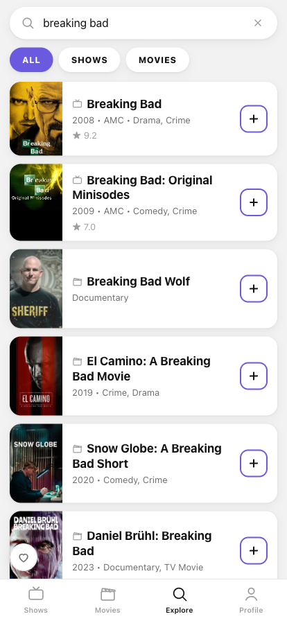
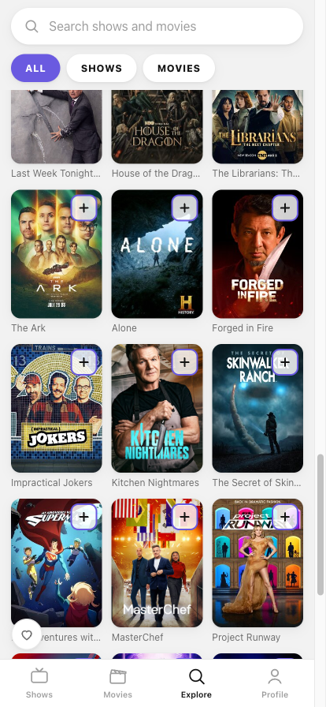

What it looks like


What it does
-
A watchlist that knows what's next
Up Next, Not Started and Been a While. Each card shows the episode you're on (
3×01 +3), and checking in takes one tap — with Undo. -
Upcoming episodes
Today, by weekday, then Later — with air time, channel, a “7 DAYS” countdown and PREMIERE / NEW / AIRED badges.
-
Movies too
A watch list and a watched list, and unreleased films show a countdown to their release date.
-
Recommendations that explain themselves
“For you” is computed on your device from your own library: genres weighted by episodes watched and recency, with dropped shows as a negative signal. Every card says why it's there.
-
Explore
Search across ALL / SHOWS / MOVIES with exact matches first, plus Airing tonight and Popular this week.
-
Your data is a file you own
Profile has time and episode stats, shelves by status, a full reset — and JSON export/import for moving your library between devices.
Where the data lives
Your library never leaves the device — it's stored in the browser's own
localStorage. There's no sync and no account, so moving to a new
phone means Profile → Export on the old one and Import on the new one.
Metadata comes from free APIs that need no key of yours: TV data from TVmaze (CC BY-SA), movie data from TMDB, Cinemeta and iTunes. They complement each other rather than replace each other — episodes and air times always come from TVmaze, where they're most accurate.
This product uses the TMDB API but is not endorsed or certified by TMDB.
Installing it
iPhone
Open it in Safari, then Share → Add to Home Screen.
Android
Open it in Chrome and accept the Install prompt, or use the menu → Install app.
Desktop
It just runs in the browser — no install needed.
Installed, it opens like an app, works offline through a service worker, and your library is safer from being wiped along with your browsing data.
The old address, mrwd.github.io/film-table,
still works and stays up for the libraries built on it — localStorage
is tied to a domain and doesn't move on its own.
What it isn't
A free, fan-made project, not affiliated with TV Time or Whip Media. Being local-first also means no comments, no friends and no push notifications for airings — those need a server and accounts, which is exactly what this doesn't have.